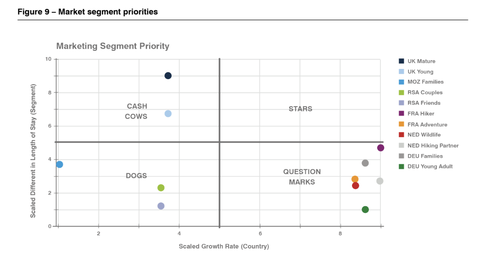

Cinco másteres especializados en turismo, con proyectos de campo en destinos reales. Mi vínculo con el IREST es a través del curso de Inteligencia de Marketing (MIT) — los demás proyectos son investigaciones independientes con autoridades nacionales de turismo.
Viabilidad del turismo en fincas cafeteras como fuente de ingresos complementaria para pequeños productores.
Solo si confluyen flujos turísticos existentes, calidad del café y redes colaborativas entre productores.
Flujos turísticos · Calidad del café · Red colaborativa. Ausente cualquiera, el beneficio no escala.
Conectar con operadores turísticos genera más impacto que los programas nacionales de arriba a abajo.
6 mercados emisores ampliados con encuestas de visitantes y análisis de gasto — 11 segmentos mapeados por crecimiento del país y duración de estancia.

UK Mature (45–54) y UK Young (25–34) — estancias largas, rentables sin inversión significativa.
DEU, FRA y NED — alto crecimiento, engagement aún incierto. Ninguno ha alcanzado el cuadrante ideal.
RSA y MOZ: bajo crecimiento, baja implicación — pese a ser los mercados más cercanos.
Cinco etapas del recorrido digital del viajero — y dónde Timor-Leste pierde el impulso.
Cobertura mediática de nicho genera curiosidad real.
El contenido de planificación no emerge desde los puntos de entrada.
Contenido existe sobre temas, alojamiento y experiencias.
Sin hub de planificación — el viajero debe armar el viaje por su cuenta.
Operadores internacionales venden Timor-Leste con itinerarios estructurados.
Errores técnicos erosionan la confianza en el momento de reservar.
Seguridad, logística de llegada e información en destino son fiables.
Consistencia del alojamiento varía según el sitio.
Visitantes muy motivados a recomendar — sentimiento muy positivo.
Las reseñas no se integran en el recorrido de planificación oficial.
Auditoría web · 8.173 reseñas TripAdvisor en 4 grupos de islas · segmentación BCG basada en encuestas de salida.
TongaTourism.travel y TheKingdomOfTonga.com compiten por las mismas búsquedas — el dominio antiguo roba miles de visitas al mes al nuevo.
Usuarios activos +107% anual, pero tiempo de interacción −12,65% — con una carga móvil de 7,5 s frente al umbral de 2,5 s.
Supera a Fiji (0,275 vs. 0,237) en sentimiento de alojamiento — pero tiene la percepción de valor más baja de la región y un CTR del 2% con 330.000 impresiones en EE.UU.
Equipos de estudiantes del MIT del IREST asumen encargos reales de destinos y entregan análisis que el DMO puede aplicar directamente.